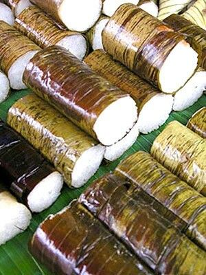
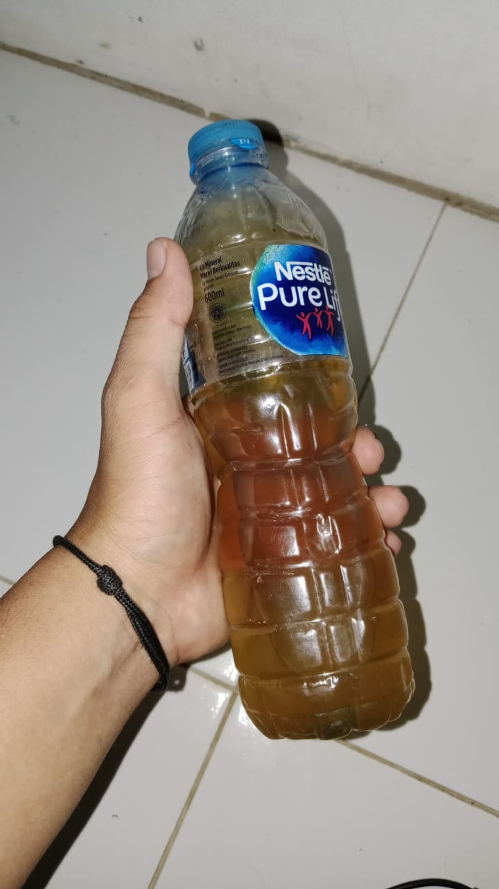
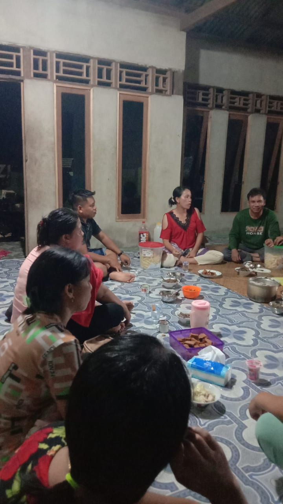

Tradisi Gawai Nyapat Taun
Indonesia adalah negara yang kaya akan budaya dan tradisi. Secara umum setiap budaya memiliki tradisi yang khas dan unik, bahkan bisa jadi mirip atau benar-benar berbeda dengan daerah lain. Salah satu kekayaan budaya tersebut berasal dari masyarakat adat di wilayah Kalimantan Barat, yaitu Suku Dayak Ketungau Tesaek. Salah satu tradisi yang masih dijaga dan dilestarikan hingga saat ini adalah Gawai Nyapat Taun. Kata "Gawai" dalam bahasa Dayak berarti perayaan atau pesta, sedangkan "Nyapat Taun" berarti mengakhiri musim pertanian sebelum memulai tahun pertanian yang baru. Gawai Nyapat Taun merupakan acara adat yang memiliki nilai spiritual, sosial dan ekologis yang tinggi. Tradisi ini merupakan kebudayaan yang diwariskan secara turun temurun oleh nenek moyang. Ini merupakan bentuk ungkapan syukur kepada Petara (Tuhan) atas hasil panen yang diperoleh.
Semangkang (Lemang)
Semangkang atau lemang adalah makanan khas dayak yang terbuat dari beras pulut (ketan). ini dimasak di dalam bambu yang sudah dilapisi daun pisang dan diberi santan kemudian di masak di atas batai (sebuah tempat untuk memasak lemang).
Tuak
Tuak adalah minuman khas kalimantan yang terbuat dari beras pulut (ketan) yang dimasak dan diberi ragi.
Orang Panggel
Ini adalah orang-orang yang panggel (main) ketempat dimana gawai dilaksanakan. Ini adalah bentuk menjaga silaturami yang terjalin antar masyarakat.
Penutup Artikel
Tradisi Gawai Nyapat Taun Ketungau Tesaek merupakan suatu perayaan dari rasa syukur atas hasil panen yang didapatkan. tradisi ini merupakan identitas budaya yang kuat dan khas dari masyarakat dayak di Kalimantan yang patut dijaga dan dihargai. Pelestarian tradisi ini adalah langkah penting dalam menjaga keberagaman dan kekayaan budaya Nusantara.